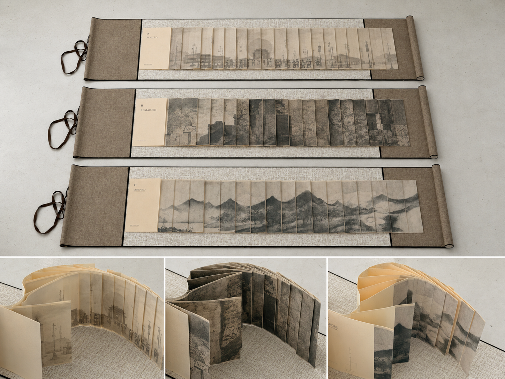
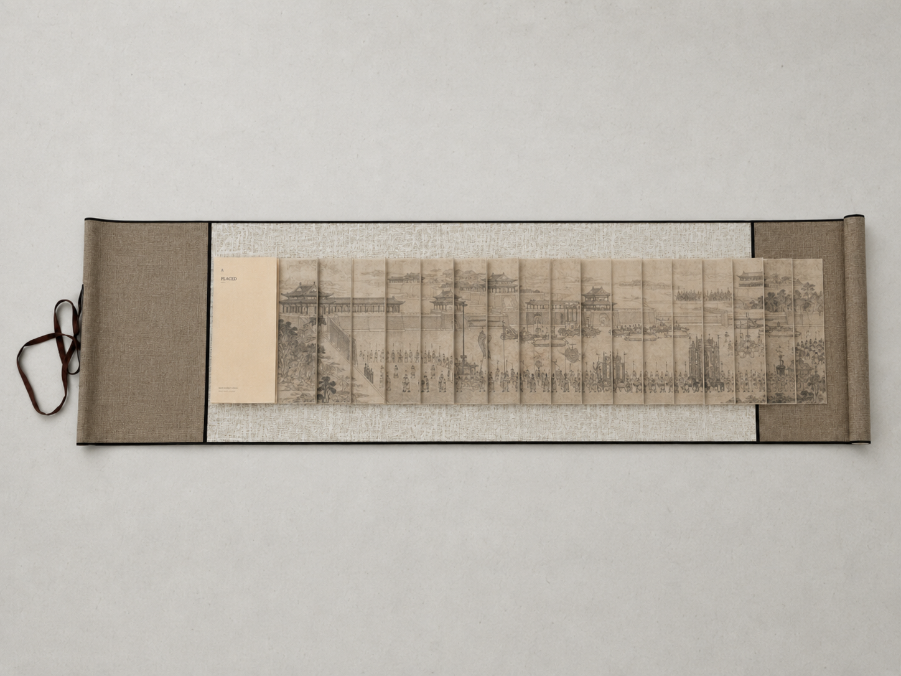
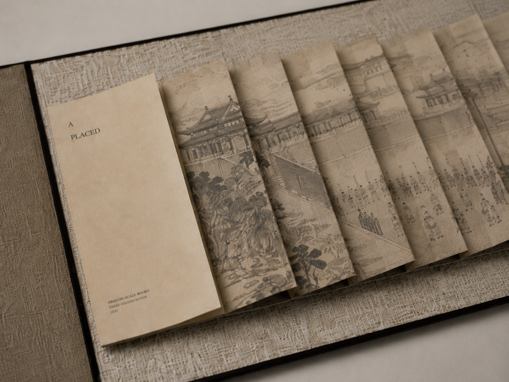
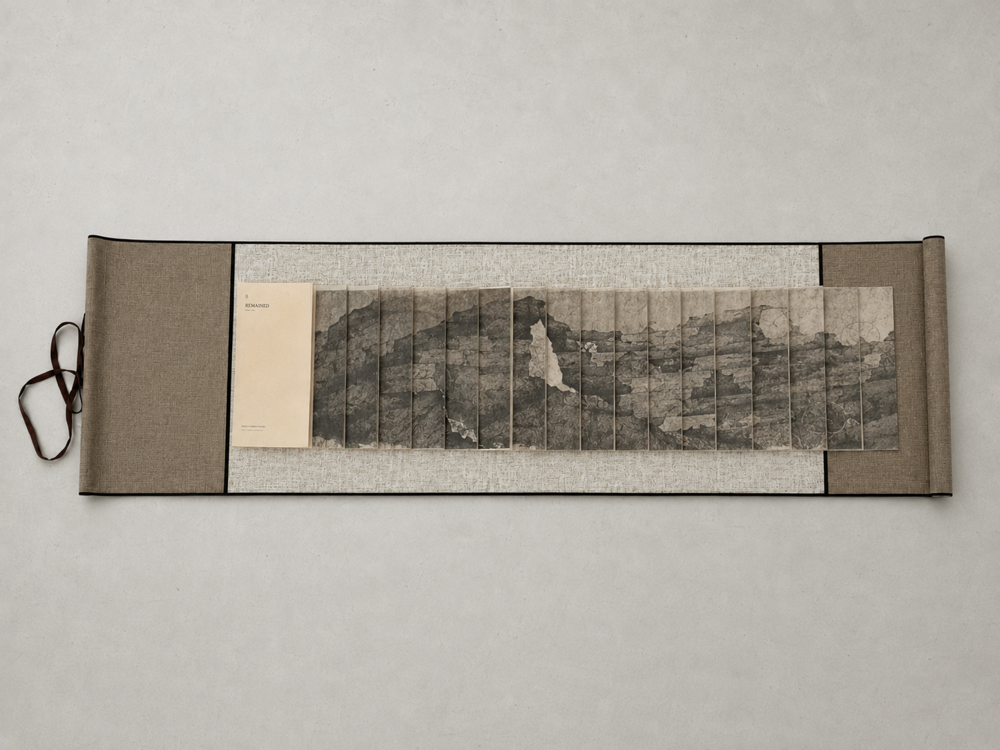
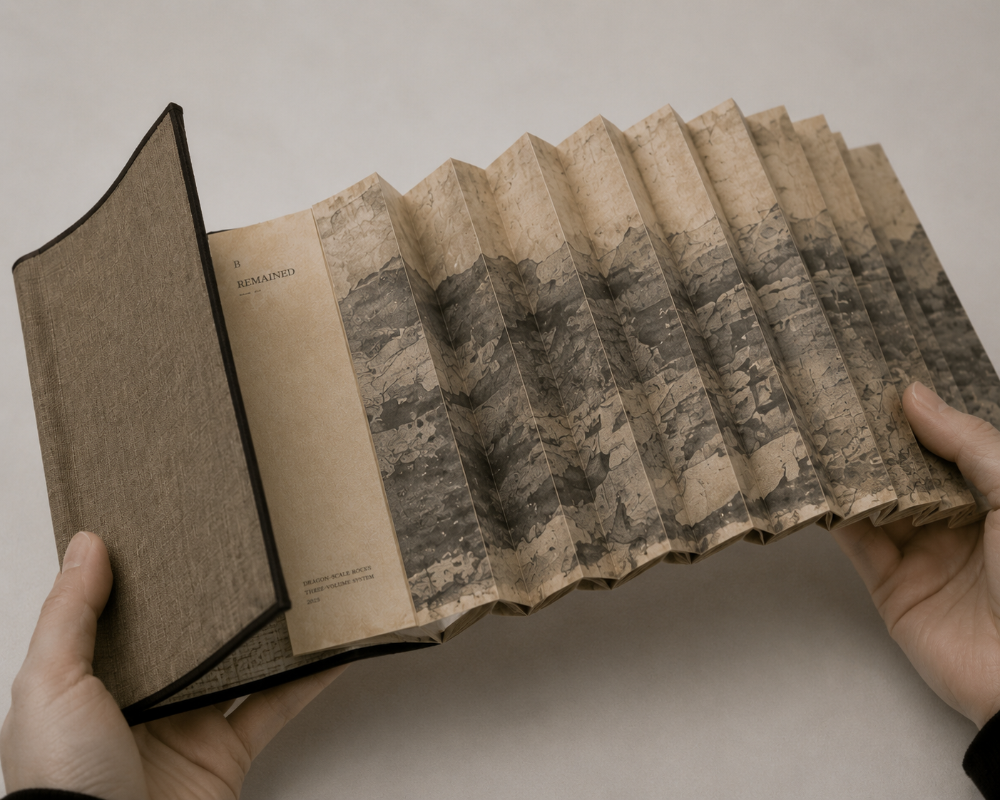
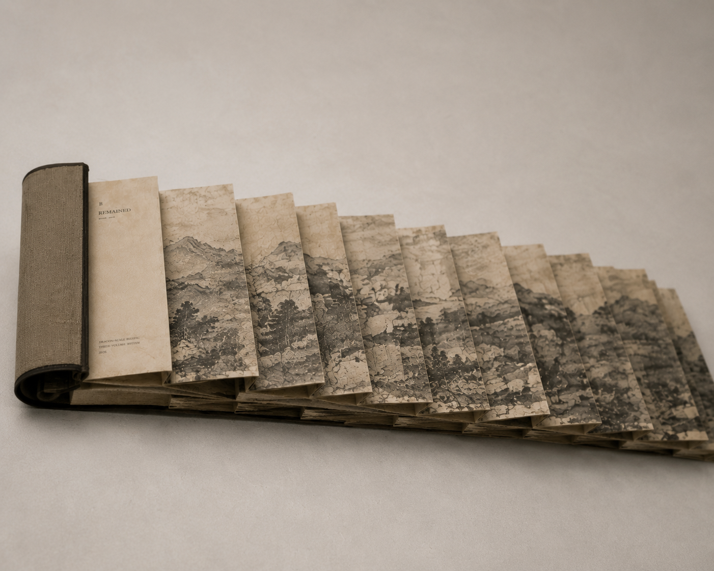
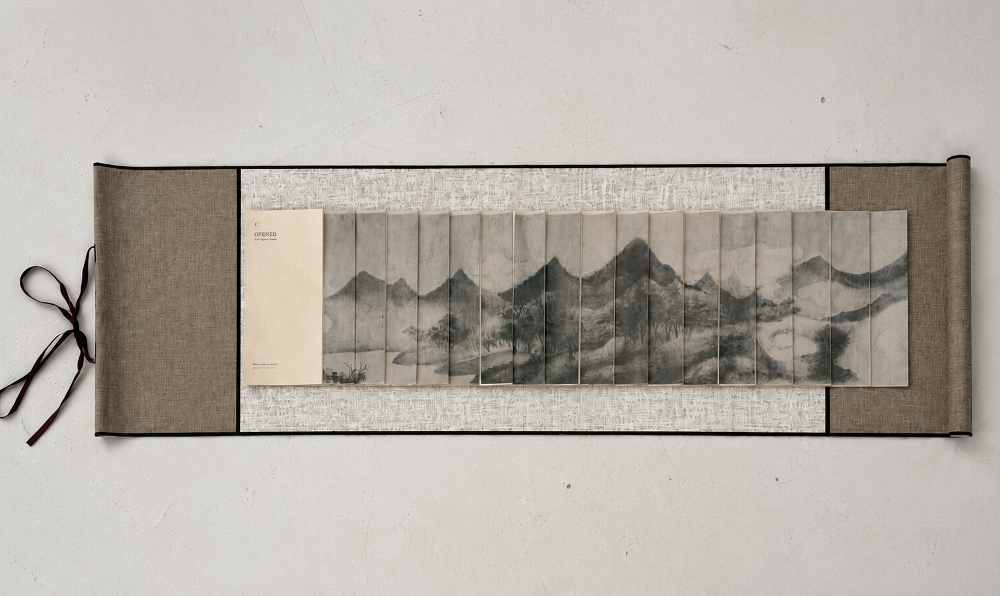
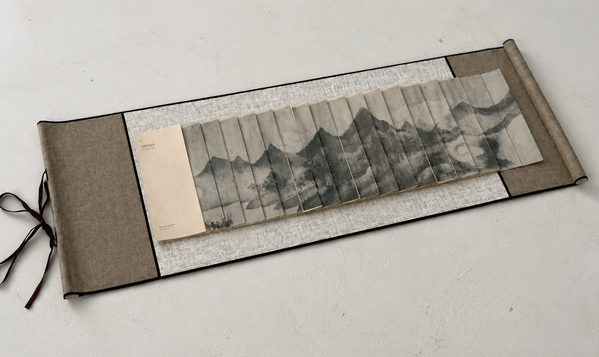

03 / Current Research Project
Three States of Order
Beijing Order / Longlin Binding Book
An artist book series translating historical spatial experience into layered structures of opening, remaining, and being placed.

Project Statement
This project investigates how systems of order can be translated into a material structure of reading.
Originating from observations of spatial and institutional organization in Beijing, the work identifies three distinct systems of order: imperial, spatial, and perceptual. Rather than treating these systems as representational subjects, the project approaches them as structural logics that can be reorganized through the folding and unfolding mechanism of dragon-scale binding.
The binding structure reconfigures visual information into a layered and temporal reading experience. As the viewer moves through the book, images are not encountered as fixed pages, but as shifting fragments within a spatial sequence. The book is therefore understood not only as an object, but as a system in which image, structure, and perception are continuously reassembled.
Structure Overview
A layered reading mechanism
The three volumes operate as related but distinct orders. Their visual sequences unfold through the same binding logic, allowing difference to be read through structure, rhythm, and handling.

System A
Placed
The first volume considers order as placement: a visual field structured by hierarchy, procession, and institutional orientation.


System B
Remained
The second volume addresses order as remainder: a structure where visual information persists through overlap, partial concealment, and material depth.



System C
Opened
The third volume shifts order toward perceptual opening. Image and structure become a temporal sequence, requiring the viewer to read across folds, intervals, and gaps.


Method / Research Relevance
The project uses dragon-scale binding as both a material technique and a research method. Folding, overlap, and sequential viewing become ways to test how historical imagery and spatial order can be reorganized through embodied reading.
Within a practice-based research context, the work connects artist book making, image-based research, and material memory. It proposes the book as a spatial-sensory system rather than a neutral container for images.